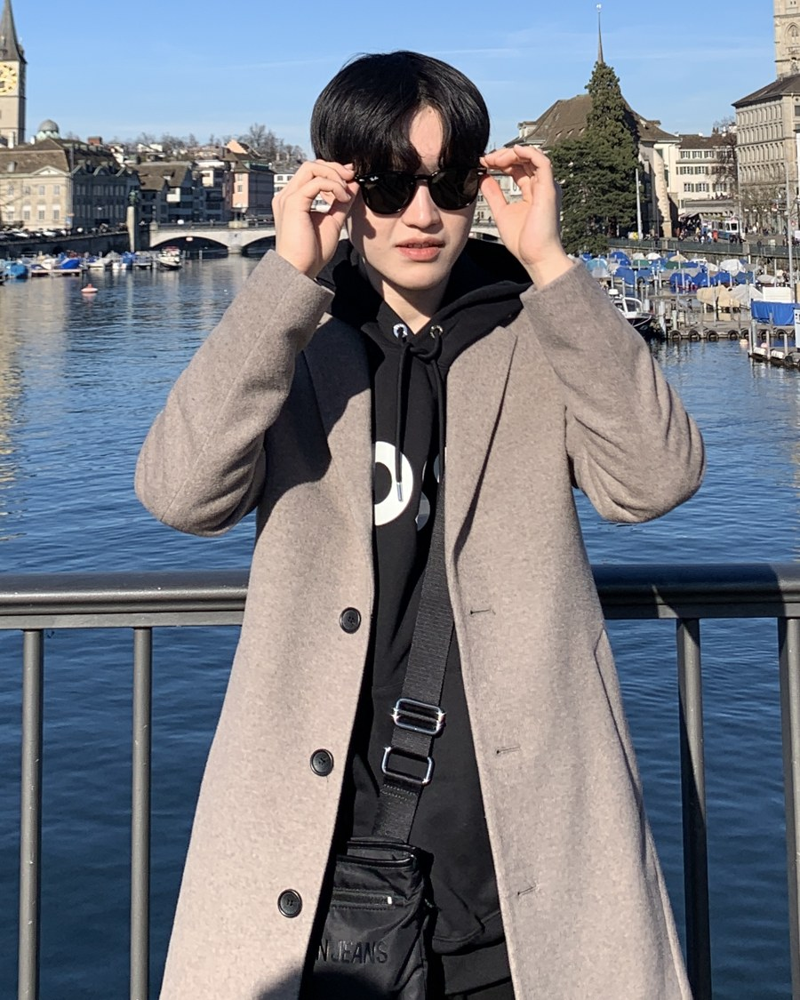

M.S. Student · Computational Intelligence & Photography Lab · Yonsei University
Jinho Kim
I build generative models for low-level vision — currently agentic image restoration — advised by Prof. Seon Joo Kim.

01 · Summary
I'm an M.S. student at Yonsei University, advised by Prof. Seon Joo Kim in the Computational Intelligence & Photography Lab (CIPLAB). Before that, I completed my B.S. in Applied Artificial Intelligence at Sungkyunkwan University, where I worked as an undergraduate research assistant in the AIM Lab under Prof. Sungeun Hong.
My research began in HDR reconstruction and multi-exposure fusion, using diffusion models and implicit neural representations to recover detail a single exposure can't capture. I'm now focused on agentic image restoration — building agents that reason about and adaptively solve restoration tasks. I'm always glad to talk research or explore collaborations, so feel free to reach out.
02 · Publications
* equal contribution
2026
-
Dual‑Output Multi‑Exposure HDR Reconstruction via SDR Fusion and Gain Map Inverse Tone Mapping — ECCV 2026
-
LIIFusion: Coarse‑to‑fine Framework for Generative MEF via Implicit Neural Representation — ECCV 2026
-
Exploiting Over‑Exposure Tonal Priors for Two‑Pass Diffusion‑based Multi‑Exposure Fusion — IPIU 2026
03 · Experience
-
Sep 2025 — Present
CIPLAB, Yonsei University
Graduate Researcher advised by Prof. Seon Joo Kim — research generative models for low-level vision, currently focused on agentic image restoration.
-
Jan 2025 — Aug 2025
CIPLAB, Yonsei University
Undergraduate Research Assistant advised by Prof. Seon Joo Kim — diffusion-model study and any-size image generation.
-
Jul 2024 — Dec 2024
AIM Lab, Sungkyunkwan University
Undergraduate Research Assistant advised by Prof. Sungeun Hong — MotionBERT‑based 3D human pose estimation.
-
Mar 2024 — Dec 2024
Junior–Senior Department Representative
Applied Artificial Intelligence, Sungkyunkwan University.
-
Mar 2024 — Dec 2024
Google Developer Student Club
Member, SKKU chapter.
-
Mar 2021 — Jun 2021 · Mar 2024 — Feb 2025
Scientific Society [COCO:] / [brAIn]
Study‑group activities and computer‑vision paper review.
04 · Honors & Awards
- 2025AI SeoulTech Graduate Scholarship
- 2025BEYOND GREEN AI For Thriving Future Pitch Competition — UNESCO Global Forum on the Ethics of AI, Round 2
- 2024AICOSS AI Capstone Design Hackathon — 2nd Prize, Korean Association for Computer Education
- 2024SKKU AI‑Education Hackathon — 2nd Prize
- 2024AICOSS AI+X Industry‑academic Cooperation Hackathon — 3rd Prize
- 2024Presidential Science Scholarship
- 2024Trelleborg Capstone Project, THU Germany — Excellent result
- 2023SKKU Dean's List — 4.5/4.5 GPA in 21 credits
- 2020SKKU Learning Fair — 3rd place, Undergraduate Presidential Award
05 · Get in Touch
Open to research collaborations, questions about the work above, or just talking vision.